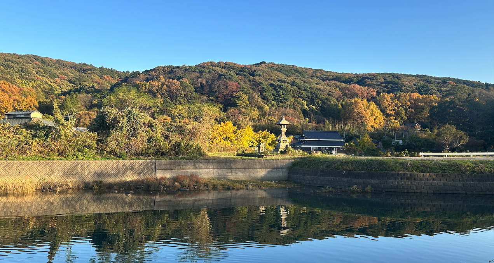

岐部ハウス - 宿泊施設
国東半島の静かな入江の村。神社の裏手の古民家を現代的にリノベートした静かな田舎の隠れ家。 古い柱や梁をそのままに、快適に過ごせるリビング、ダイニング、和室を備えた落ち着いた空間をご用意しました。

ホームステイ型ですので、ホスト以外、他のお客様の宿泊はありません。 ご宿泊には一階のリビング・ダイニング、二つの和室と一つの洋間をご使用ください。

キッチンスペースのシステムキッチン、小型冷蔵庫、オーブンレンジ、オーブントースター他の調理器具や食器をご自由にお使いください。

その他ご覧のようなバス、トイレ、洗面台、乾燥機付き洗濯機などをご利用いただけます。